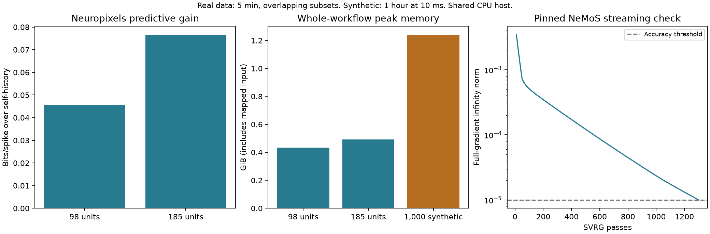
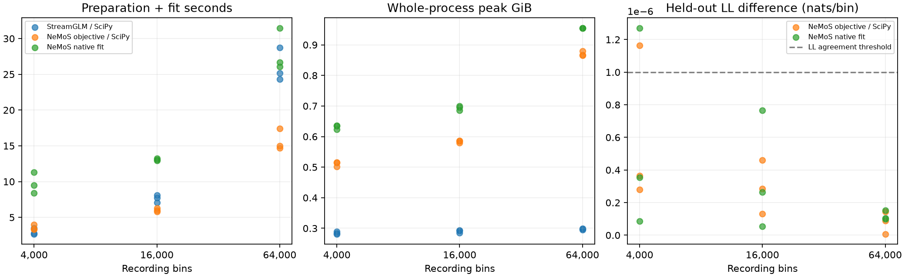
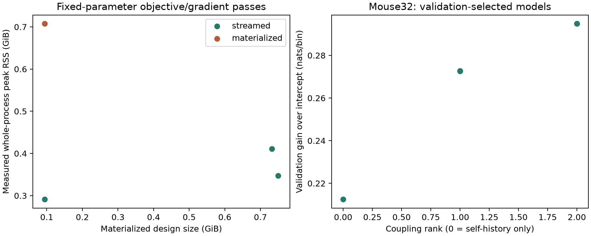
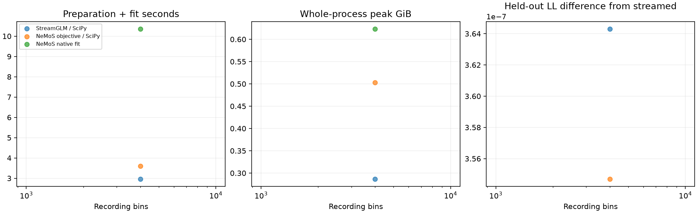

StreamGLM
Efficient population GLM fitting: prediction, recovery, memory and runtime.
StreamGLM
A JAX fitting implementation that processes history features in chunks, with dense and low-rank coupling options. It predicts expected spike counts/rates and estimates coupling filters. NeMoS is the reference comparison, not an engine invoked separately for each neuron by this project.
When the generating network is low rank
| Neurons | Model | Test gain (bits/spike) ↑ | Filter correlation ↑ |
|---|---|---|---|
| 64 | StreamGLM dense | 0.000906 | 0.294 |
| 64 | StreamGLM low rank | 0.006618 | 0.764 |
| 64 | NeMoS | 0.000906 | 0.294 |
| 128 | StreamGLM dense | 0.000008 | 0.152 |
| 128 | StreamGLM low rank | 0.002470 | 0.593 |
| 128 | NeMoS | 0.000005 | 0.151 |
When the generating network is full rank
| Neurons | Model | Test gain (bits/spike) ↑ | Filter correlation ↑ |
|---|---|---|---|
| 64 | StreamGLM dense | 0.031283 | 0.789 |
| 64 | StreamGLM low rank | 0.022109 | 0.646 |
| 64 | NeMoS | 0.031283 | 0.789 |
| 128 | StreamGLM dense | 0.014152 | 0.646 |
| 128 | StreamGLM low rank | 0.004911 | 0.377 |
| 128 | NeMoS | 0.014151 | 0.646 |
All selected fits · Selection protocol
Failures and convergence — retained in the comparison
The original 256 tuning candidates included 188 gradient-gate passes, 46 completed without passing the gate, 21 numerical failures and one timeout. The timeout retry completed but still failed the convergence gate. All 24 selected model results were available. Failed candidates were not eligible for selection; they remain part of the accounting.
Factorized models use a gradient gate in factor coordinates. Search budgets and solver configurations differ; the tuning timings are not a pure implementation-speed benchmark. Full tuning report · Failure audit
Runtime and memory: wins and losses
| Bins | Data family | Backend | First fit (s) ↓ | Repeat fit (s) ↓ | Peak RSS (GiB) ↓ |
|---|---|---|---|---|---|
| 24000 | lowrank | StreamGLM | 2.379 | 1.606 | 0.311 |
| 24000 | lowrank | NeMoS | 7.863 | 2.781 | 0.730 |
| 24000 | fullrank | StreamGLM | 7.446 | 6.436 | 0.315 |
| 24000 | fullrank | NeMoS | 11.489 | 6.545 | 0.723 |
| 48000 | lowrank | StreamGLM | 3.960 | 3.274 | 0.316 |
| 48000 | lowrank | NeMoS | 8.413 | 3.627 | 0.814 |
| 48000 | fullrank | StreamGLM | 13.007 | 12.867 | 0.309 |
| 48000 | fullrank | NeMoS | 14.459 | 9.781 | 0.879 |
| 96000 | lowrank | StreamGLM | 5.605 | 4.802 | 0.335 |
| 96000 | lowrank | NeMoS | 9.809 | 5.034 | 1.018 |
| 96000 | fullrank | StreamGLM | 22.125 | 21.315 | 0.332 |
| 96000 | fullrank | NeMoS | 21.120 | 16.682 | 1.020 |
These compare StreamGLM SciPy L-BFGS-B with NeMoS native LBFGS. First-fit timings include feature creation and compilation; repeats reuse caches, including NeMoS’s design. Imports and validation checks are excluded. The host is shared. These measurements do not establish superiority over all NeMoS solvers or its streaming capabilities.
Real spikes: held-out prediction
| Retained neurons | Selected rank | Test gain over self-history (bits/spike) ↑ | Peak RSS (GiB) |
|---|---|---|---|
| 98 | 5 | 0.0456 | 0.433 |
| 185 | 5 | 0.0766 | 0.492 |
Coupling improves test prediction over a self-history baseline in these cohorts. Real recordings have no synaptic answer key, so these gains do not validate anatomical connectivity. The report’s optimizer-success flags do not imply the later strict 1e-5 gradient gate: selected gradient norms were approximately 1.07e-4 and 3.58e-4.
What remains unresolved
A 1,000-neuron independent-spike stress test demonstrates fitting feasibility, not planted connectivity recovery. No completed coupled-1,000-neuron report was found in the checked v8 experiment directories. Broader recording/session replication and an equivalent streaming-versus-streaming NeMoS comparison remain needed before general performance claims.
Figures
Saved plots from the project’s experiments. Select a figure to inspect the original at full resolution; captions identify the experiment and its limits.
Neuropixels validation and workflow memory



Matched dense-model comparison



Early memory and Mouse32 validation



Initial matched-fit smoke test



Reading the scores
- Bits per spike
- Held-out log-likelihood gain per spike relative to the stated baseline. Positive is better; this is not a percentage.
- Filter correlation
- Pearson correlation of reconstructed filter values, including self-history in the tuned benchmark. Not an edge-detection AUC.
- Low rank
- Represents interactions through fewer shared patterns. Helps when the assumption matches the data and can hurt when it does not.
- Peak RSS
- Peak resident process memory. Lower is better for the same workload; timing and measurement boundaries matter.
- Convergence gate
- An independent gradient check used for candidate eligibility. Optimizer success alone is not equivalent to passing the strict gate.
StreamGLM source records
Compact copies of the evidence used on this page. Raw recordings and feature caches are not included.